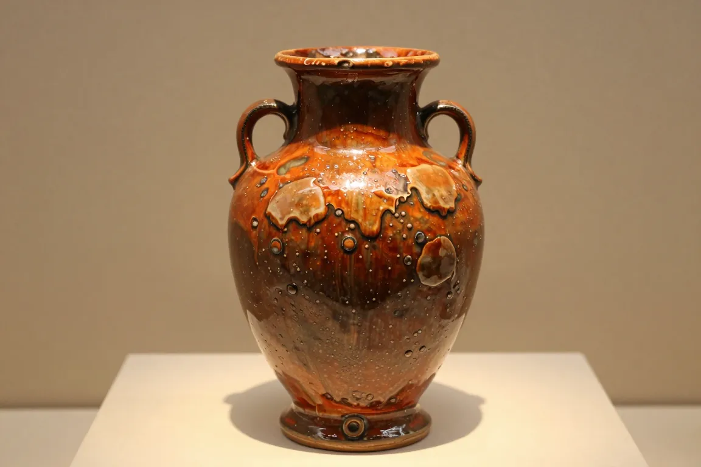

Vaser og boller fra vesttyske fabrikker mellom 1960 og 1980. En tykk, boblete glasur med kratere renner over et formet leirgodslegeme, i oransje, brunt, grønt eller gult.

Kjerneidé
En tykk glasur som får renne, boble og danne kratere gir en masseprodusert vase utseendet av avkjølt vulkansk stein.
Designprinsipper
Form leirgodslegemet i en dristig, rund eller utsvingt form med en vid åpning.
Legg lavaglasuren i et lag på 1 til 3 mm, og legg en tynnere glasur over.
La glasuren renne og danne kratere, slik at ingen to vaser er like.
Velg en klar bunn: oransje, gult, grønt eller brunt, med en hvit eller svart dryppkant.
Lag store gulvvaser på 40 til 60 cm og bordvaser på 15 til 30 cm.
Legg til et relieff av ringer, bånd eller bobler i formen, slik at glasuren får et sted å samle seg.
Brenn ved 1000 til 1100 °C i en tunnelovn.
Merk bunnen med fabrikkens navn, et modellnummer og en høyde i cm.